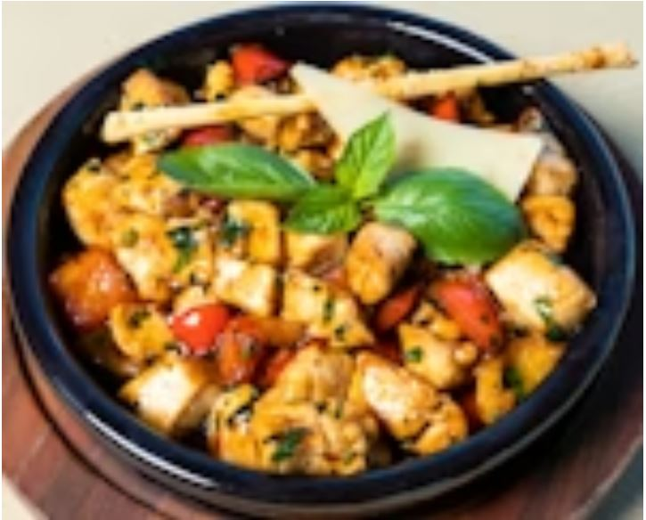

Tuscan Chicken
Chicken, tomato, garlic · ⭐ 4.8
Cook what you have, Waste less.

Enter ingredients, Get recipes, Stop food waste.
People waste food because they forget ingredients and can't decide what to cook. Families lose money and food ends up in landfills.
I built a tool with pantry tracker with expiry dates, weekly meal planner, recipe ideas and substitution guide. I used tables to organize everything.
The data relationships are hard, expiry warnings need Javascript to work dynamically. Also tables inside tables got messy. Hardest part: the site looks functional but doesn't actually work yet.
Chicken, tomato, garlic · ⭐ 4.8

Beans, onion, garlic · ⭐ 4.6
| Day | Dinner |
|---|---|
| Mon | Chicken skillet |
| Tue | Black bean soup |
| Wed | Mushroom pasta |
| Ingredient | Expiry |
|---|---|
| Chicken | 2026-03-20 |
| Tomatoes | 2026-03-15 |
| Onion | 2026-03-25 |
| Missing | Use instead |
|---|---|
| Butter | Oil |
| Eggs | Banana |
Waste prevented: 8.5 kg this month.